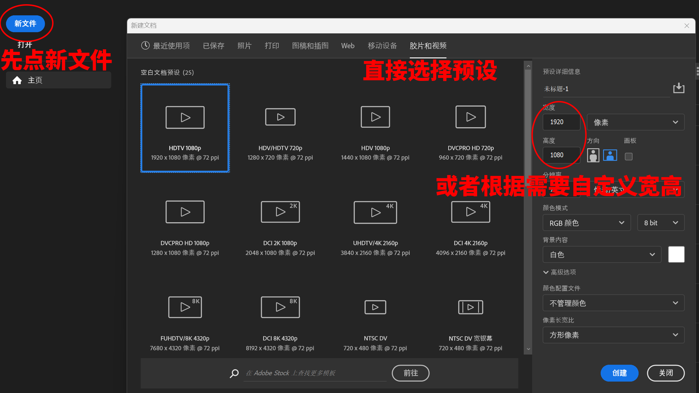
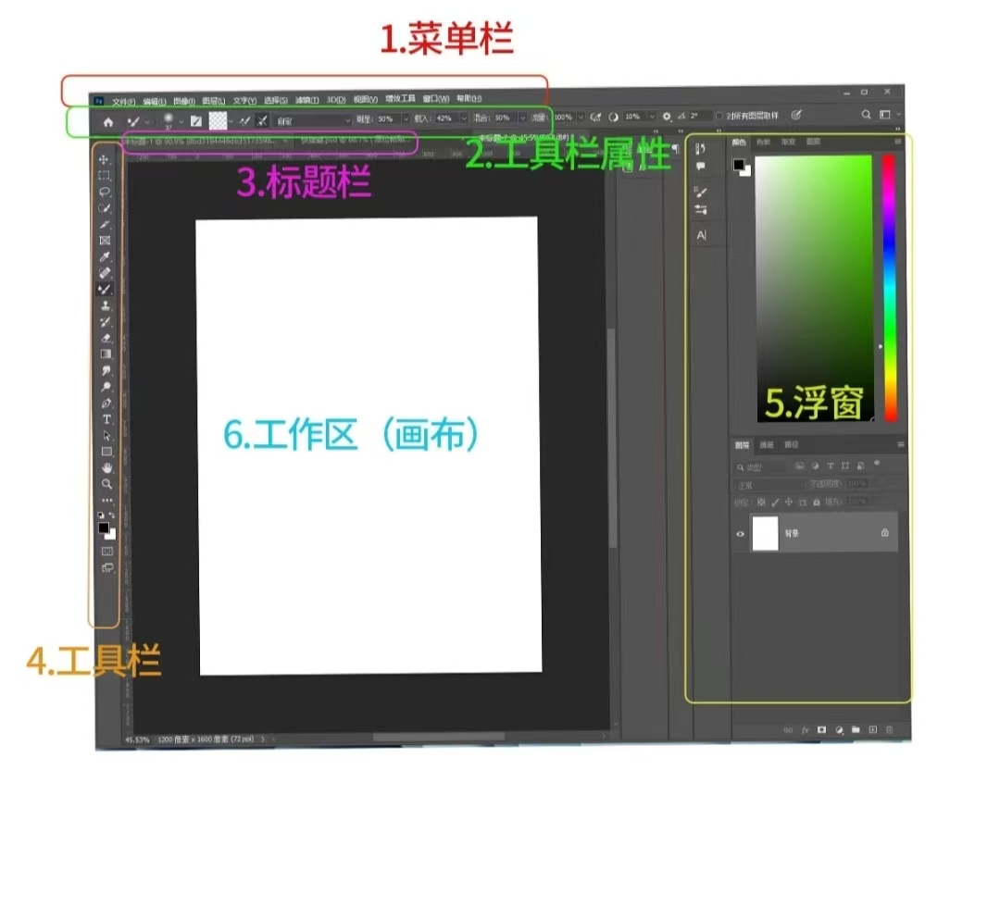

创建新项目
启动PS，先点击“新文件”，之后会弹出“新建文档”窗口
在窗口中选择新文件的配置。这里我们主要关注画布的宽高，这决定了我们最后导出的图片的尺寸
可以通过直接选择预设好的配置，也可以在右侧自定义宽高
（下面示例的第一个项目设置了500x500）

文档配置界面
基本界面
设定好项目配置后点击创建，随后进入正式的工作界面。如下图，其中中心这块白色就是我们的500x500画布（最后导出时不会包括画布之外的内容）
（如果出现青色的参考线，点击上方“视图”->“参考线”->“清除参考线”，即可清除）

创建好的初始界面（tips:创建好之后如果还想更改画布大小：右上角“图像”->“画布大小”）

从小x书某博主偷（划掉）来的理解
查看和视图
滚轮：上下移动画布
Ctrl+滚轮：左右移动画布
Alt+滚轮：缩放画布
点击放大视频
点击缩小视频
抓手工具：自由移动画布
旋转视图工具：旋转画布
缩放工具：放大和缩小画布。左键放大，Alt+左键缩小
点击放大视频
点击缩小视频